Getting Started with NNS: Clustering and Regression
Fred Viole
Source:vignettes/NNSvignette_Clustering_and_Regression.Rmd
NNSvignette_Clustering_and_Regression.RmdClustering and Regression
Below are some examples demonstrating unsupervised learning with NNS clustering and nonlinear regression using the resulting clusters. As always, for a more thorough description and definition, please view the References.
NNS Partitioning NNS.part()
NNS.part is both a partitional and
hierarchical clustering method. NNS iteratively partitions
the joint distribution into partial moment quadrants, and then assigns a
quadrant identification (1:4) at each partition.
NNS.part returns a
data.table of observations along with their final quadrant
identification. It also returns the regression points, which are the
quadrant means used in NNS.reg.
x = seq(-5, 5, .05); y = x ^ 3
for(i in 1 : 4){NNS.part(x, y, order = i, Voronoi = TRUE, obs.req = 0)}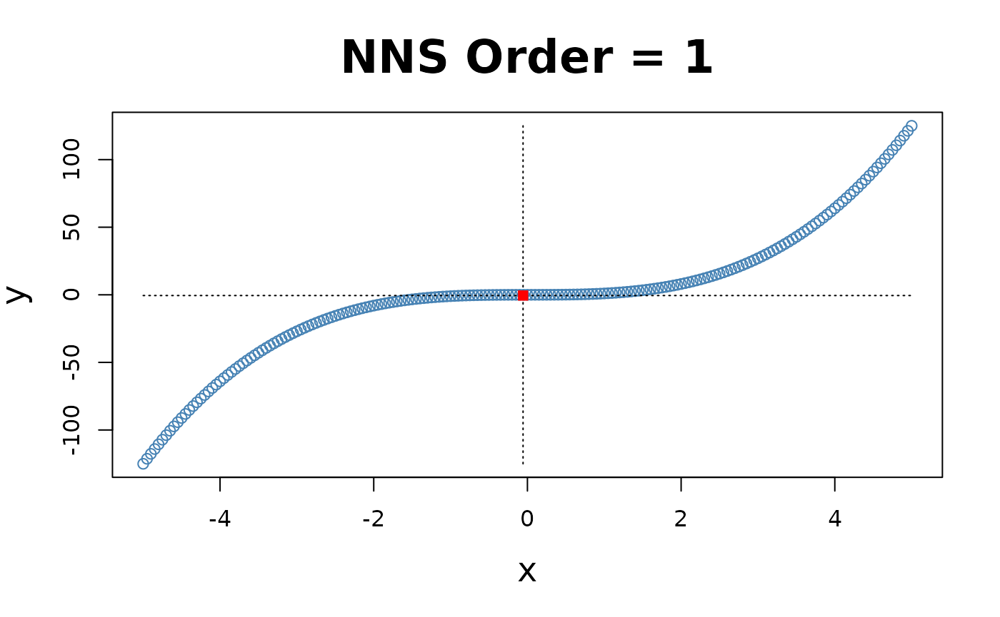
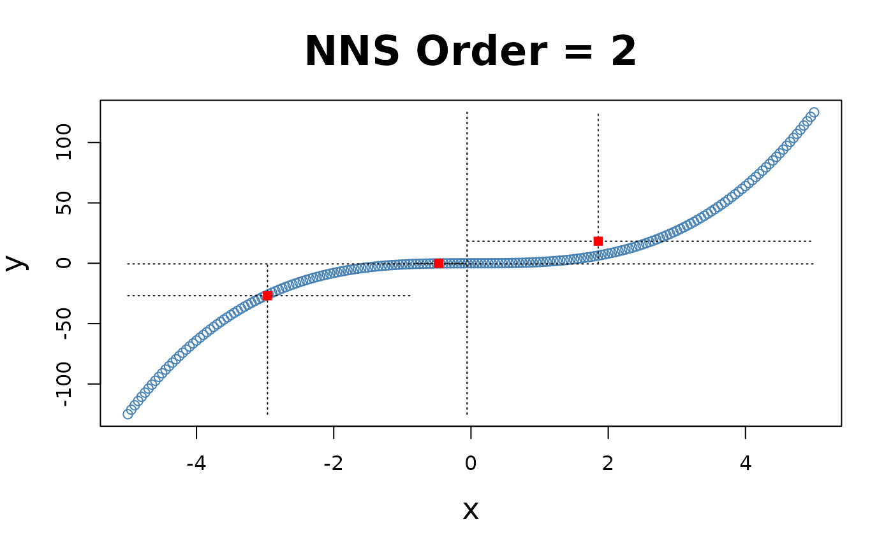
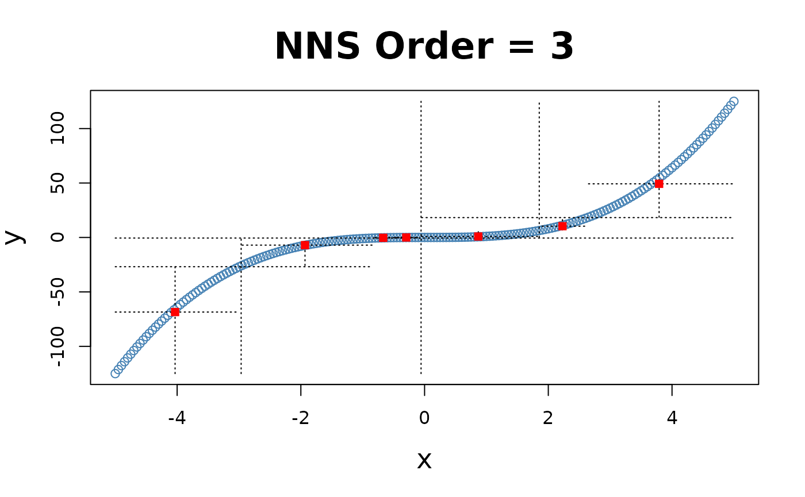
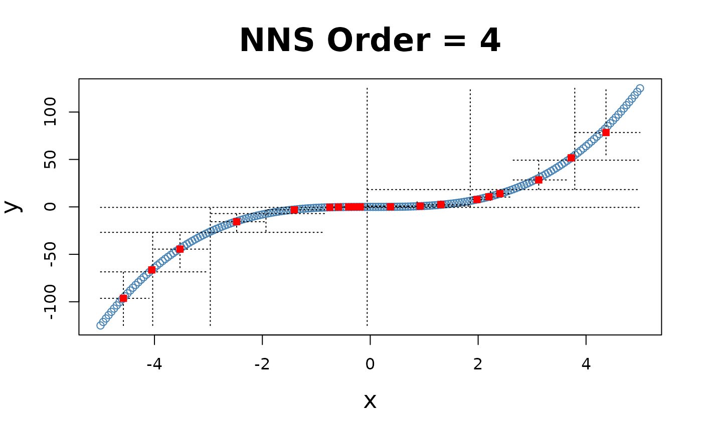
X-only Partitioning
NNS.part offers a partitioning based on
values only
NNS.part(x, y, type = "XONLY", ...), using
the entire bandwidth in its regression point derivation, and shares the
same limit condition as partitioning via both
and
values.
for(i in 1 : 4){NNS.part(x, y, order = i, type = "XONLY", Voronoi = TRUE)}


Note the partition identifications are limited to 1’s and 2’s (left and right of the partition respectively), not the 4 values per the and partitioning.
## $order
## [1] 4
##
## $dt
## x y quadrant prior.quadrant
## <num> <num> <char> <char>
## 1: -5.00 -125.0000 q1111 q111
## 2: -4.95 -121.2874 q1111 q111
## 3: -4.90 -117.6490 q1111 q111
## 4: -4.85 -114.0841 q1111 q111
## 5: -4.80 -110.5920 q1111 q111
## ---
## 197: 4.80 110.5920 q2222 q222
## 198: 4.85 114.0841 q2222 q222
## 199: 4.90 117.6490 q2222 q222
## 200: 4.95 121.2874 q2222 q222
## 201: 5.00 125.0000 q2222 q222
##
## $regression.points
## quadrant x y
## <char> <num> <num>
## 1: q111 -4.4523966 -89.31996002
## 2: q112 -3.2250000 -31.51531806
## 3: q121 -2.0023966 -7.46341667
## 4: q122 -0.7590415 -0.51890098
## 5: q211 0.3739355 0.08338409
## 6: q212 1.3499632 2.26930682
## 7: q221 2.6206250 16.42843100
## 8: q222 4.1955267 75.78894504


NNS Regression NNS.reg()
NNS.reg can fit any
,
for both uni- and multivariate cases.
NNS.reg returns a self-evident list of
values provided below.
Univariate:
NNS.reg(x, y, ncores = 1)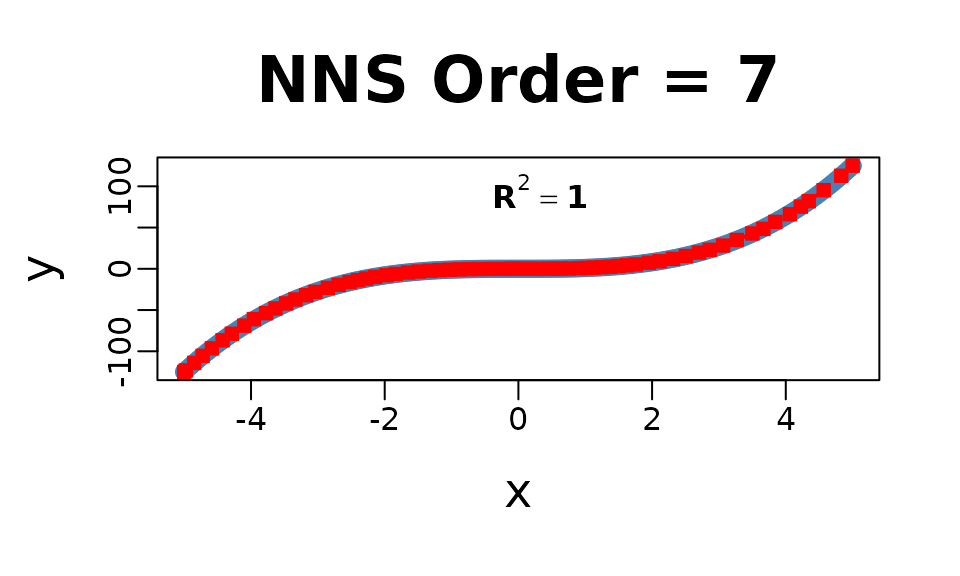
## $R2
## [1] 0.9999858
##
## $SE
## [1] 0.1822738
##
## $Prediction.Accuracy
## NULL
##
## $equation
## NULL
##
## $x.star
## NULL
##
## $derivative
## Coefficient X.Lower.Range X.Upper.Range
## <num> <num> <num>
## 1: 74.25250000 -5.0000000 -4.9750000
## 2: 72.47650000 -4.9750000 -4.8500000
## 3: 68.69350000 -4.8500000 -4.7250000
## 4: 64.88656716 -4.7250000 -4.5854167
## 5: 61.01480519 -4.5854167 -4.4250000
## 6: 57.64628788 -4.4250000 -4.2875000
## 7: 52.29438889 -4.2875000 -4.1000000
## 8: 55.28971014 -4.1000000 -3.9562500
## 9: 39.55816092 -3.9562500 -3.7750000
## 10: 41.08694030 -3.7750000 -3.6354167
## 11: 38.01863636 -3.6354167 -3.4750000
## 12: 34.69626866 -3.4750000 -3.3354167
## 13: 31.88168831 -3.3354167 -3.1750000
## 14: 29.28265152 -3.1750000 -3.0375000
## 15: 25.79438889 -3.0375000 -2.8500000
## 16: 23.18416667 -2.8500000 -2.6875000
## 17: 20.17544872 -2.6875000 -2.5250000
## 18: 18.23350000 -2.5250000 -2.4000000
## 19: 16.36150000 -2.4000000 -2.2750000
## 20: 15.45634921 -2.2750000 -2.1437500
## 21: 12.10506173 -2.1437500 -1.9750000
## 22: 10.84291045 -1.9750000 -1.8354167
## 23: 9.17837079 -1.8354167 -1.6500000
## 24: 7.71713333 -1.6500000 -1.4937500
## 25: 5.67487654 -1.4937500 -1.3250000
## 26: 4.77015152 -1.3250000 -1.1875000
## 27: 3.65525641 -1.1875000 -1.0250000
## 28: 2.71828358 -1.0250000 -0.8854167
## 29: 1.97577922 -0.8854167 -0.7250000
## 30: 1.29696970 -0.7250000 -0.5875000
## 31: 0.71536082 -0.5875000 -0.3854167
## 32: 0.26031250 -0.3854167 -0.1854167
## 33: 0.08077922 -0.1854167 -0.1052083
## 34: 0.01168831 -0.1052083 -0.0250000
## 35: 0.00625000 -0.0250000 0.0750000
## 36: 0.05125000 0.0750000 0.1750000
## 37: 0.17050000 0.1750000 0.3000000
## 38: 0.40450000 0.3000000 0.4250000
## 39: 0.68125000 0.4250000 0.5250000
## 40: 0.99625000 0.5250000 0.6250000
## 41: 1.30261905 0.6250000 0.7562500
## 42: 2.23351852 0.7562500 0.9250000
## 43: 2.85625000 0.9250000 1.0250000
## 44: 3.47125000 1.0250000 1.1250000
## 45: 4.21750000 1.1250000 1.2500000
## 46: 5.19250000 1.2500000 1.3750000
## 47: 6.18250000 1.3750000 1.5000000
## 48: 7.35250000 1.5000000 1.6250000
## 49: 7.76690476 1.6250000 1.7562500
## 50: 10.84596774 1.7562500 1.9500000
## 51: 10.93692308 1.9500000 2.1125000
## 52: 14.30505155 2.1125000 2.3145833
## 53: 17.95467391 2.3145833 2.5062500
## 54: 21.46451613 2.5062500 2.7000000
## 55: 20.50807692 2.7000000 2.8625000
## 56: 26.01343750 2.8625000 3.0625000
## 57: 32.71687737 3.0625000 3.2671585
## 58: 34.19048114 3.2671585 3.5000000
## 59: 33.57759494 3.5000000 3.6645833
## 60: 46.95453488 3.6645833 3.8437500
## 61: 42.67514286 3.8437500 4.0625000
## 62: 57.09307692 4.0625000 4.2250000
## 63: 55.24078947 4.2250000 4.3437500
## 64: 59.68593153 4.3437500 4.5671585
## 65: 66.33740696 4.5671585 4.8301031
## 66: 72.01977335 4.8301031 5.0000000
## Coefficient X.Lower.Range X.Upper.Range
## <num> <num> <num>
##
## $Point.est
## NULL
##
## $pred.int
## NULL
##
## $regression.points
## x y
## <num> <num>
## 1: -5.0000000 -1.250000e+02
## 2: -4.9750000 -1.231437e+02
## 3: -4.8500000 -1.140841e+02
## 4: -4.7250000 -1.054974e+02
## 5: -4.5854167 -9.644035e+01
## 6: -4.4250000 -8.665256e+01
## 7: -4.2875000 -7.872620e+01
## 8: -4.1000000 -6.892100e+01
## 9: -3.9562500 -6.097310e+01
## 10: -3.7750000 -5.380319e+01
## 11: -3.6354167 -4.806814e+01
## 12: -3.4750000 -4.196931e+01
## 13: -3.3354167 -3.712629e+01
## 14: -3.1750000 -3.201194e+01
## 15: -3.0375000 -2.798557e+01
## 16: -2.8500000 -2.314913e+01
## 17: -2.6875000 -1.938170e+01
## 18: -2.5250000 -1.610319e+01
## 19: -2.4000000 -1.382400e+01
## 20: -2.2750000 -1.177881e+01
## 21: -2.1437500 -9.750167e+00
## 22: -1.9750000 -7.707437e+00
## 23: -1.8354167 -6.193948e+00
## 24: -1.6500000 -4.492125e+00
## 25: -1.4937500 -3.286323e+00
## 26: -1.3250000 -2.328687e+00
## 27: -1.1875000 -1.672792e+00
## 28: -1.0250000 -1.078812e+00
## 29: -0.8854167 -6.993854e-01
## 30: -0.7250000 -3.824375e-01
## 31: -0.5875000 -2.041042e-01
## 32: -0.3854167 -5.954167e-02
## 33: -0.1854167 -7.479167e-03
## 34: -0.1052083 -1.000000e-03
## 35: -0.0250000 -6.250000e-05
## 36: 0.0750000 5.625000e-04
## 37: 0.1750000 5.687500e-03
## 38: 0.3000000 2.700000e-02
## 39: 0.4250000 7.756250e-02
## 40: 0.5250000 1.456875e-01
## 41: 0.6250000 2.453125e-01
## 42: 0.7562500 4.162813e-01
## 43: 0.9250000 7.931875e-01
## 44: 1.0250000 1.078813e+00
## 45: 1.1250000 1.425938e+00
## 46: 1.2500000 1.953125e+00
## 47: 1.3750000 2.602188e+00
## 48: 1.5000000 3.375000e+00
## 49: 1.6250000 4.294063e+00
## 50: 1.7562500 5.313469e+00
## 51: 1.9500000 7.414875e+00
## 52: 2.1125000 9.192125e+00
## 53: 2.3145833 1.208294e+01
## 54: 2.5062500 1.552425e+01
## 55: 2.7000000 1.968300e+01
## 56: 2.8625000 2.301556e+01
## 57: 3.0625000 2.821825e+01
## 58: 3.2671585 3.491404e+01
## 59: 3.5000000 4.287500e+01
## 60: 3.6645833 4.840131e+01
## 61: 3.8437500 5.681400e+01
## 62: 4.0625000 6.614919e+01
## 63: 4.2250000 7.542681e+01
## 64: 4.3437500 8.198666e+01
## 65: 4.5671585 9.532100e+01
## 66: 4.8301031 1.127641e+02
## 67: 5.0000000 1.250000e+02
## x y
## <num> <num>
##
## $Fitted.xy
## x y y.hat NNS.ID gradient residuals standard.errors
## <num> <num> <num> <char> <num> <num> <num>
## 1: -5.00 -125.0000 -125.0000 q1111111 74.25250 0.0000000 0.00000000
## 2: -4.95 -121.2874 -121.3318 q1111112 72.47650 -0.0444000 0.07380015
## 3: -4.90 -117.6490 -117.7080 q1111121 72.47650 -0.0589500 0.07380015
## 4: -4.85 -114.0841 -114.0841 q1111121 68.69350 0.0000000 0.05069967
## 5: -4.80 -110.5920 -110.6495 q1111122 68.69350 -0.0574500 0.05069967
## ---
## 197: 4.80 110.5920 110.7671 q2222221 66.33741 0.1751022 0.27620216
## 198: 4.85 114.0841 114.1970 q2222222 72.01977 0.1129090 0.12572307
## 199: 4.90 117.6490 117.7980 q2222222 72.01977 0.1490227 0.12572307
## 200: 4.95 121.2874 121.3990 q2222222 72.01977 0.1116363 0.12572307
## 201: 5.00 125.0000 125.0000 q2222222 72.01977 0.0000000 0.12572307Multivariate:
Multivariate regressions return a plot of
and
,
as well as the regression points ($RPM) and partitions
($rhs.partitions) for each regressor.
f = function(x, y) x ^ 3 + 3 * y - y ^ 3 - 3 * x
y = x ; z <- expand.grid(x, y)
g = f(z[ , 1], z[ , 2])
NNS.reg(z, g, order = "max", plot = FALSE, ncores = 1)## $R2
## [1] 1
##
## $rhs.partitions
## Var1 Var2
## <num> <num>
## 1: -5.00 -5
## 2: -4.95 -5
## 3: -4.90 -5
## 4: -4.85 -5
## 5: -4.80 -5
## ---
## 40397: 4.80 5
## 40398: 4.85 5
## 40399: 4.90 5
## 40400: 4.95 5
## 40401: 5.00 5
##
## $RPM
## Var1 Var2 y.hat
## <num> <num> <num>
## 1: -4.8 -4.80 7.105427e-15
## 2: -4.8 -2.55 -8.726063e+01
## 3: -4.8 -2.50 -8.806700e+01
## 4: -4.8 -2.45 -8.883587e+01
## 5: -4.8 -2.40 -8.956800e+01
## ---
## 40397: -2.6 -2.80 3.776000e+00
## 40398: -2.6 -2.75 2.770875e+00
## 40399: -2.6 -2.70 1.807000e+00
## 40400: -2.6 -2.65 8.836250e-01
## 40401: -2.6 -2.60 1.776357e-15
##
## $Point.est
## NULL
##
## $pred.int
## NULL
##
## $Fitted.xy
## Var1 Var2 y y.hat NNS.ID residuals
## <num> <num> <num> <num> <char> <num>
## 1: -5.00 -5 0.000000 0.000000 201.201 0
## 2: -4.95 -5 3.562625 3.562625 402.201 0
## 3: -4.90 -5 7.051000 7.051000 603.201 0
## 4: -4.85 -5 10.465875 10.465875 804.201 0
## 5: -4.80 -5 13.808000 13.808000 1005.201 0
## ---
## 40397: 4.80 5 -13.808000 -13.808000 39597.40401 0
## 40398: 4.85 5 -10.465875 -10.465875 39798.40401 0
## 40399: 4.90 5 -7.051000 -7.051000 39999.40401 0
## 40400: 4.95 5 -3.562625 -3.562625 40200.40401 0
## 40401: 5.00 5 0.000000 0.000000 40401.40401 0Inter/Extrapolation
NNS.reg can inter- or extrapolate any point of interest.
The NNS.reg(x, y, point.est = ...)
parameter permits any sized data of similar dimensions to
and called specifically with
NNS.reg(...)$Point.est.
NNS Dimension Reduction Regression
NNS.reg also provides a dimension
reduction regression by including a parameter
NNS.reg(x, y, dim.red.method = "cor", ...).
Reducing all regressors to a single dimension using the returned
equation
NNS.reg(..., dim.red.method = "cor", ...)$equation.
NNS.reg(iris[ , 1 : 4], iris[ , 5], dim.red.method = "cor", location = "topleft", ncores = 1)$equation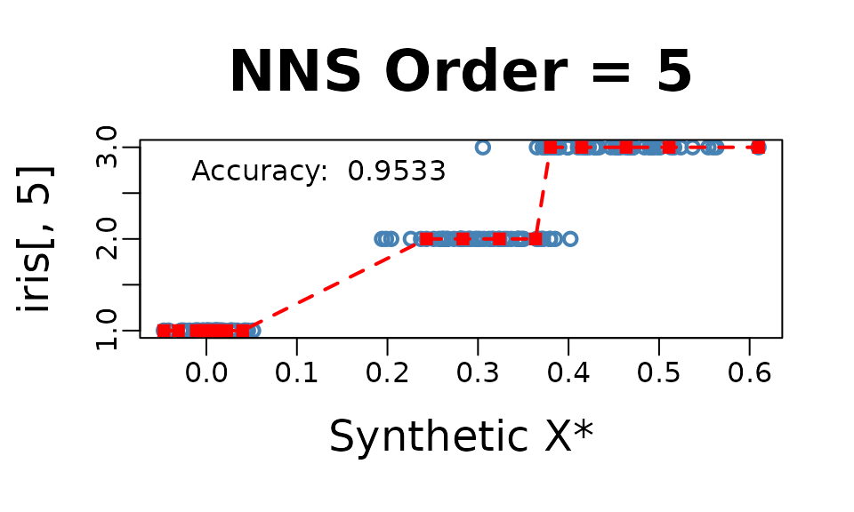
## Variable Coefficient
## <char> <num>
## 1: Sepal.Length 0.7980781
## 2: Sepal.Width -0.4402896
## 3: Petal.Length 0.9354305
## 4: Petal.Width 0.9381792
## 5: DENOMINATOR 4.0000000Thus, our model for this regression would be:
Threshold
NNS.reg(x, y, dim.red.method = "cor", threshold = ...)
offers a method of reducing regressors further by controlling the
absolute value of required correlation.
NNS.reg(iris[ , 1 : 4], iris[ , 5], dim.red.method = "cor", threshold = .75, location = "topleft", ncores = 1)$equation
## Variable Coefficient
## <char> <num>
## 1: Sepal.Length 0.7980781
## 2: Sepal.Width 0.0000000
## 3: Petal.Length 0.9354305
## 4: Petal.Width 0.9381792
## 5: DENOMINATOR 3.0000000Thus, our model for this further reduced dimension regression would be:
and the point.est = (...) operates in the same manner as
the full regression above, again called with
NNS.reg(...)$Point.est.
NNS.reg(iris[ , 1 : 4], iris[ , 5], dim.red.method = "cor", threshold = .75, point.est = iris[1 : 10, 1 : 4], location = "topleft", ncores = 1)$Point.est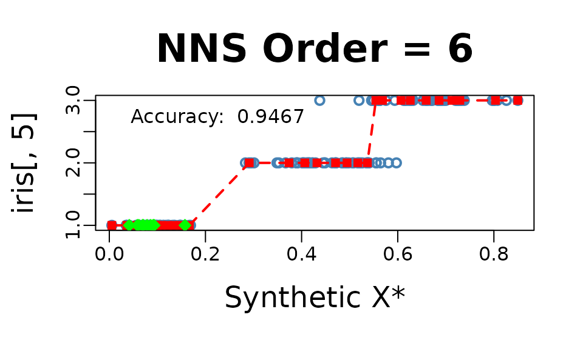
## [1] 1 1 1 1 1 1 1 1 1 1Classification
For a classification problem, we simply set
NNS.reg(x, y, type = "CLASS", ...).
NOTE: Base category of response variable should be 1, not 0 for classification problems.
NNS.reg(iris[ , 1 : 4], iris[ , 5], type = "CLASS", point.est = iris[1 : 10, 1 : 4], location = "topleft", ncores = 1)$Point.est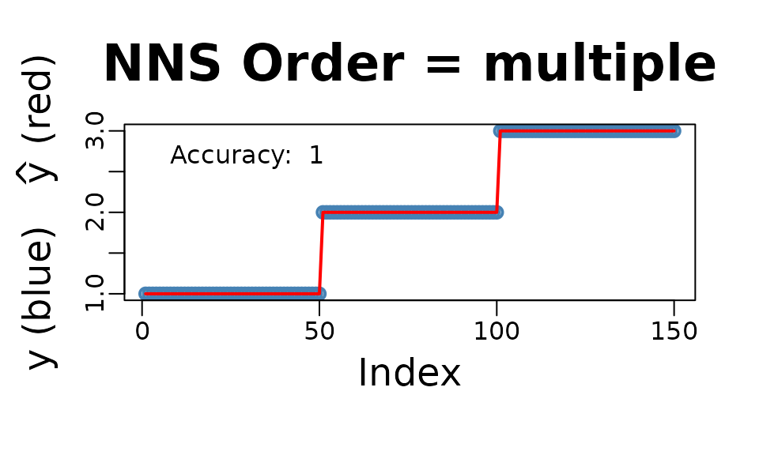
## [1] 1 1 1 1 1 1 1 1 1 1Cross-Validation NNS.stack()
The NNS.stack routine cross-validates
for a given objective function the n.best parameter in the
multivariate NNS.reg function as well as
the threshold parameter in the dimension reduction
NNS.reg version.
NNS.stack can be used for
classification:
NNS.stack(..., type = "CLASS", ...)
or continuous dependent variables:
NNS.stack(..., type = NULL, ...).
Any objective function obj.fn can be called using
expression() with the terms predicted and
actual, even from external packages such as
Metrics.
NNS.stack(..., obj.fn = expression(Metrics::mape(actual, predicted)), objective = "min").
NNS.stack(IVs.train = iris[ , 1 : 4],
DV.train = iris[ , 5],
IVs.test = iris[1 : 10, 1 : 4],
dim.red.method = "cor",
obj.fn = expression( mean(round(predicted) == actual) ),
objective = "max", type = "CLASS",
folds = 1, ncores = 1)Folds Remaining = 0
Current NNS.reg(... , threshold = 0.9350 ) | eval(obj.fn) = 1.000000 | MAX Iterations Remaining = 2
Current NNS.reg(... , threshold = 0.7950 ) | eval(obj.fn) = 0.973684 | MAX Iterations Remaining = 1
Current NNS.reg(... , threshold = 0.4400 ) | eval(obj.fn) = 0.894737 | MAX Iterations Remaining = 0
Current NNS.reg(. , n.best = 1 ) | eval(obj.fn) = 0.868421 | MAX Iterations Remaining = 12
Current NNS.reg(. , n.best = 2 ) | eval(obj.fn) = 0.736842 | MAX Iterations Remaining = 11
Current NNS.reg(. , n.best = 3 ) | eval(obj.fn) = 0.763158 | MAX Iterations Remaining = 10
Current NNS.reg(. , n.best = 4 ) | eval(obj.fn) = 0.736842 | MAX Iterations Remaining = 9
$OBJfn.reg
[1] 0.9733333
$NNS.reg.n.best
[1] 1
$probability.threshold
[1] 0.495
$OBJfn.dim.red
[1] 0.9666667
$NNS.dim.red.threshold
[1] 0.935
$reg
[1] 1 1 1 1 1 1 1 1 1 1
$reg.pred.int
NULL
$dim.red
[1] 1 1 1 1 1 1 1 1 1 1
$dim.red.pred.int
NULL
$stack
[1] 1 1 1 1 1 1 1 1 1 1
$pred.int
NULLIncreasing Dimensions
Given multicollinearity is not an issue for nonparametric regressions
as it is for OLS, in the case of an ill-fit univariate model a better
option may be to increase the dimensionality of regressors with a copy
of itself and cross-validate the number of clusters n.best
via:
NNS.stack(IVs.train = cbind(x, x), DV.train = y, method = 1, ...).
set.seed(123)
x = rnorm(100); y = rnorm(100)
nns.params = NNS.stack(IVs.train = cbind(x, x),
DV.train = y,
method = 1, ncores = 1)
NNS.reg(cbind(x, x), y,
n.best = nns.params$NNS.reg.n.best,
point.est = cbind(x, x),
residual.plot = TRUE,
ncores = 1, confidence.interval = .95)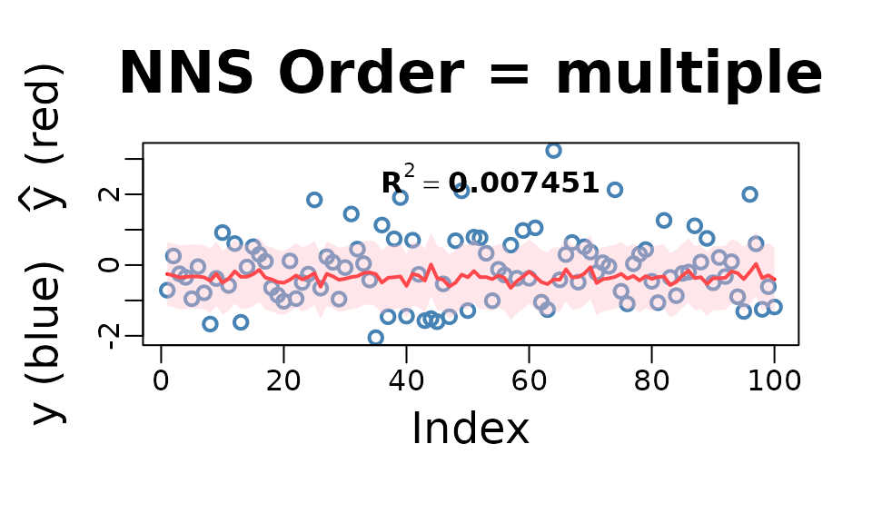
Smoothing Option
Smoothness is not required for curve fitting, but the
NNS.reg function offers an optional smoothed fit. This
feature applies a smoothing spline to regression points generated
internally using the partitioning method described earlier.
NNS.reg(x, y, smooth = TRUE)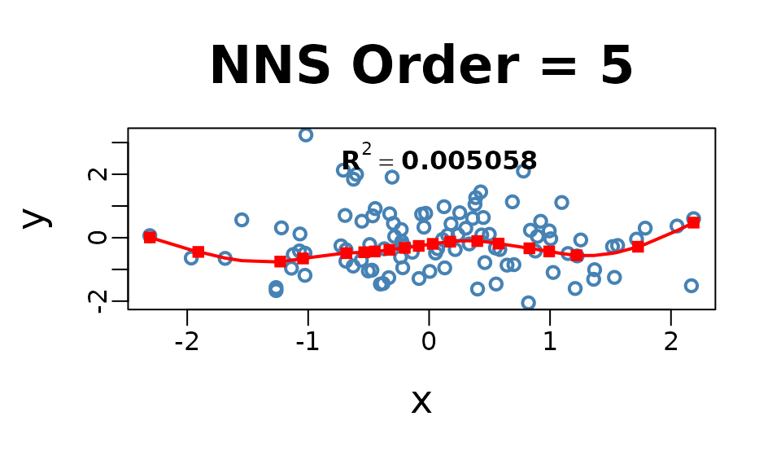
Imputation
Imputation in NNS is a direct application of nearest
neighbor regression. When values of
are missing, we use the observed
pairs as the training set and the predictors of the missing rows as
point.est.
A key insight is that even in univariate regressions,
NNS.reg benefits from the increasing dimensions trick: by
duplicating the predictor into a multivariate form,
e.g. cbind(x, x), the distance function underlying
NNS.reg operates in a 2-D space. This sharpened distance
metric allows a more robust donor selection, effectively turning
univariate imputation into a special case of multivariate nearest
neighbor regression.
For multivariate predictors, the same form applies directly — supply
the full set of observed predictors in
,
the observed responses in
,
and the incomplete rows in point.est. With
order = "max", n.best = 1, the imputation is always 1-NN
donor-based: each missing
is filled in by the response of its closest donor under the
NNS hybrid distance. This ensures imputations remain
strictly within the support of the observed data.
Categorical data is handled analogously, only
requiring NNS.reg(..., type = "CLASS") in the
procedure.
Univariate Imputation
set.seed(123)
# Univariate predictor with nonlinear signal
n <- 400
x <- sort(runif(n, -3, 3))
y <- sin(x) + 0.2 * x^2 + rnorm(n, 0, 0.25)
# Induce ~25% MCAR missingness in y
miss <- rbinom(n, 1, 0.25) == 1
y_mis <- y
y_mis[miss] <- NA
# ---- Increasing dimensions trick ----
# Duplicate x so the distance operates in a 2D space: cbind(x, x).
# This sharpens nearest-neighbor selection even in a nominally univariate setting.
x2_train <- cbind(x[!miss], x[!miss])
x2_miss <- cbind(x[miss], x[miss])
# 1-NN donor imputation with NNS.reg
y_hat_uni <- NNS::NNS.reg(
x = x2_train, # predictors (duplicated x)
y = y[!miss], # observed responses
point.est = x2_miss, # rows to impute
order = "max", # dependence-maximizing order
n.best = 1, # 1-NN donor
plot = FALSE
)$Point.est
# Fill back
y_completed_uni <- y_mis
y_completed_uni[miss] <- y_hat_uni
# Plot observed vs imputed (NNS 1-NN)
plot(x, y, pch = 1, col = "steelblue", cex = 1.5, lwd = 2,
xlab = "x", ylab = "y", main = "NNS 1-NN Imputation")
points(x[miss], y_hat_uni, col = "red", pch = 15, cex = 1.3)
legend("topleft",
legend = c("Observed", "Imputed (NNS 1-NN)"),
col = c("steelblue", "red"),
pch = c(1, 15),
pt.lwd = c(2, NA),
bty = "n")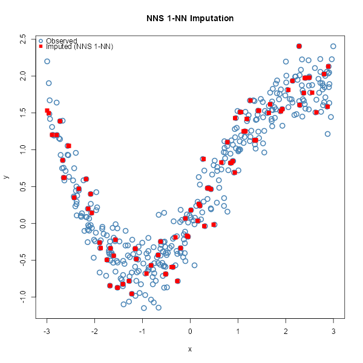
Multivariate Imputation
set.seed(123)
# Multivariate predictors with nonlinear & interaction structure
n <- 800
X <- cbind(
x1 = rnorm(n),
x2 = runif(n, -2, 2),
x3 = rnorm(n, 0, 1)
)
f <- function(x1, x2, x3) 1.1*x1 - 0.8*x2 + 0.5*x3 + 0.6*x1*x2 - 0.4*x2*x3 + 0.3*sin(1.3*x1)
y <- f(X[,1], X[,2], X[,3]) + rnorm(n, 0, 0.4)
# Induce ~30% MCAR missingness in y
miss <- rbinom(n, 1, 0.30) == 1
y_mis <- y
y_mis[miss] <- NA
# Training (observed) vs rows to impute
X_obs <- X[!miss, , drop = FALSE]
y_obs <- y[!miss]
X_mis <- X[ miss, , drop = FALSE]
# 1-NN donor imputation with NNS.reg
y_hat_mv <- NNS::NNS.reg(
x = X_obs, # all observed predictors
y = y_obs, # observed responses
point.est = X_mis, # rows to impute
order = "max", # dependence-maximizing order
n.best = 1, # 1-NN donor
plot = FALSE
)$Point.est
# Completed vector
y_completed_mv <- y_mis
y_completed_mv[miss] <- y_hat_mv
# Plot observed vs imputed (multivariate, NNS 1-NN)
plot(seq_along(y), y,
pch = 1, col = "steelblue", cex = 1.5, lwd = 2,
xlab = "Observation index", ylab = "y",
main = "NNS 1-NN Multivariate Imputation")
# Overlay imputed values
points(which(miss), y_hat_mv, pch = 15, col = "red", cex = 1.2)
# Legend
legend("topleft",
legend = c("Observed", "Imputed (NNS 1-NN)"),
col = c("steelblue", "red"),
pch = c(1, 15),
pt.lwd = c(2, NA),
bty = "n")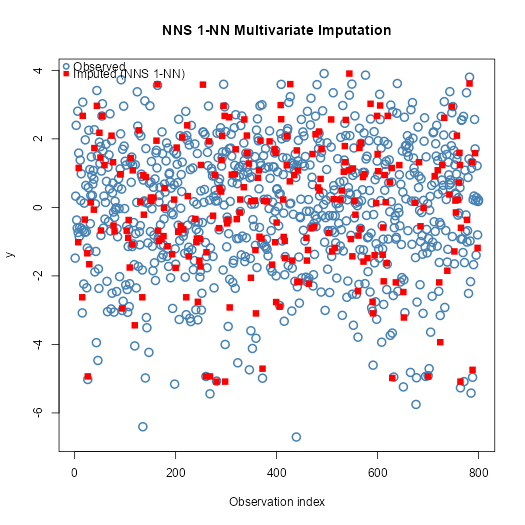
A Note on Uncertainty Propagation
A common concern with local imputation methods is whether imputation
uncertainty propagates correctly into downstream inference.
NNS addresses this through bootstrap multiple imputation:
resampling complete cases across m iterations generates
between-imputation variance that flows through standard Rubin’s rules
pooling identically to any classical procedure.
Empirically, NNS bootstrap MI outperforms MICE with
predictive mean matching on nonlinear data — producing a pooled estimate
closer to the true parameter with a smaller pooled SE. The advantage
comes not from compressing uncertainty but from a more accurate
imputation model, which reduces between-imputation variance driven by
model error rather than genuine data uncertainty.
See NNS Multiple Imputation vs MICE for the full reproducible comparison.